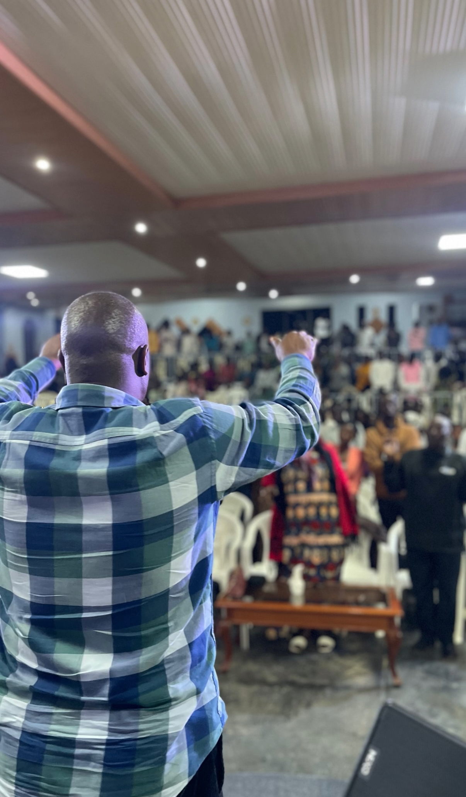
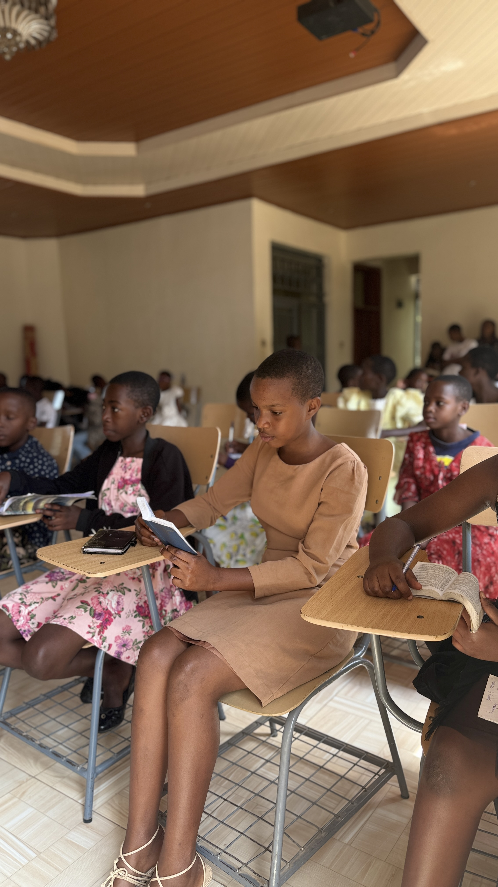

Sermons & Teachings
Watch, Listen, and Grow in Your Faith
Latest Sermons
The Power of Faith
Pastor Emmanuel Niyonzima

In this powerful message, Pastor Emmanuel explores how faith can move mountains and transform our lives. Drawing from Hebrews 11, we learn about the practical application of faith in our daily walk with God.
Walking in God's Purpose
Pastor Grace Mukamana
Pastor Grace shares insights on discovering and walking in God's purpose for our lives. This message encourages believers to seek God's will and trust in His perfect plan.
The Heart of Worship
Pastor Emmanuel Niyonzima

Exploring the true meaning of worship and its impact on our relationship with God. This message challenges us to examine our worship and draw closer to God through authentic praise.
Sermon Series
Current Series
- Walking in Faith - A 4-week series on practical faith
- Purpose Driven Life - Discovering God's plan for your life
- Spiritual Growth - Building a strong foundation in Christ
Previous Series
- Fruit of the Spirit - Growing in Christian character
- Prayer & Fasting - Deepening your prayer life
- Family Values - Building godly families
Sermon Archive
| Date | Title | Speaker | Series |
|---|---|---|---|
| Feb 25, 2024 | The Power of Faith | Pastor Emmanuel | Walking in Faith |
| Feb 18, 2024 | Walking in God's Purpose | Pastor Grace | Purpose Driven Life |
| Feb 11, 2024 | The Heart of Worship | Pastor Emmanuel | Spiritual Growth |
| Feb 4, 2024 | Growing in Love | Pastor Grace | Fruit of the Spirit |
| Jan 28, 2024 | The Power of Prayer | Pastor Emmanuel | Prayer & Fasting |
Subscribe to Our Sermons
Never miss a message! Subscribe to our sermon podcast or YouTube channel to receive updates when new sermons are available.